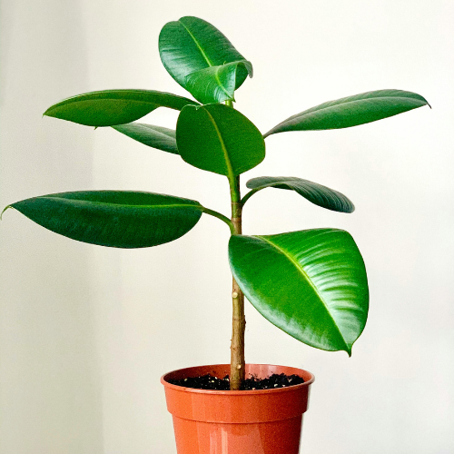
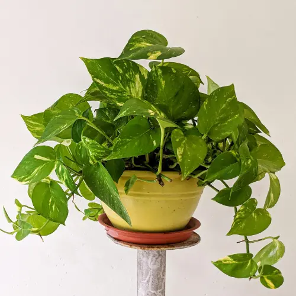
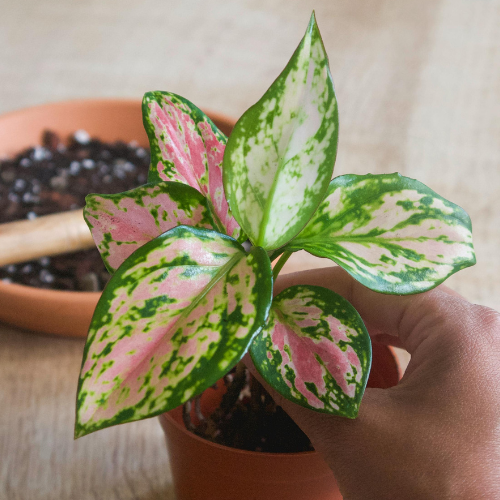
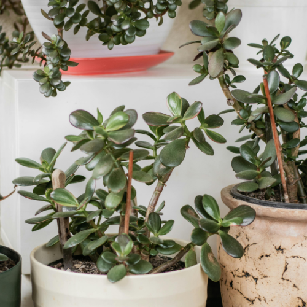
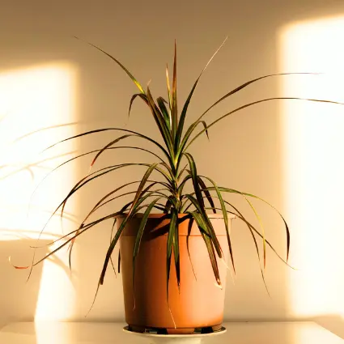
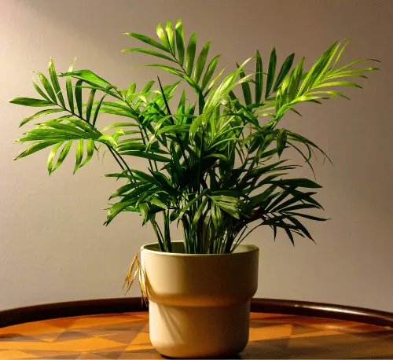

10 Easy Houseplants That Practically Grow Themselves
22 January 2026
Living in a northern climate, low-light apartment, or busy everyday routine doesn't mean houseplants are out of reach. Many plants are far more resilient than we’re led to believe - especially when you choose varieties that naturally tolerate low light, irregular watering, and indoor conditions.
This list is for beginners like me, plant skeptics, and anyone who feels like plants never survive in their home. These are houseplants that don’t need constant attention and tend to thrive even when you forget about them.
I’m not a plant professional - just someone learning as I go. After recently moving to Canada, I’ve had to adjust not only to a new place but also to a very different climate and longer winters. I’m figuring out how to care for plants in this environment through trial, error, and patience, and I share my experience so your plant journey can feel a little simpler and more approachable.
What Makes a Plant “Easy”?
When I say an “easy” houseplant, I don’t mean perfect or maintenance-free. I mean a plant that can handle normal life — changing light, missed waterings, and dry indoor air.
For me, an easy houseplant means it:
- Tolerates low to medium light.
- Doesn’t require frequent watering.
- Handles dry indoor air (especially in winter!).
- Forgives missed care routines.
These plants are great for apartments, colder climates, and real-life schedules. I currently grow about half of them, and the goal is to slowly add the rest as I learn.
1. Snake Plant (Sansevieria)

Snake plants are often considered one of the hardest houseplants to kill. Their thick, upright leaves store water, which means they don’t mind being forgotten for a while.
Why it’s easy:
- thrives in low light or bright light,
- watering only every 2–4 weeks,
- handels dry air well.
Best for: bedrooms, hallways, beginners who overwater.
2. Rubber Plant (Ficus elastica)

Rubber plants are sturdy and adaptable once established. They grow slowly and tolerate indoor conditions well.
Why it’s easy:
- doesn’t need frequent watering,
- tolerates medium light,
- strong, durable leaves.
Best for: statement corners, larger rooms.
3. Spider Plant

Spider plants grow quickly and produce small offshoots, making them both rewarding and forgiving. They’re especially good at adapting to indoor environments.
Why it’s easy:
- tolerates irregular watering,
- adapts to various light conditions,
- resilient and fast-growing.
Best for: kitchens, bright bathrooms, propagation beginners.
4. Pothos

Pothos is a trailing plant that adapts easily to many indoor conditions. It’s one of the most forgiving plants if you’re still learning how to water properly.
Why it’s easy:
- shows visible signs when it needs water,
- grows in low to bright indirect light,
- recovers quickly from stress.
Best for: shelves, hanging planters, beginners.
5. ZZ Plant (Zamioculcas zamiifolia)

The ZZ plant is slow-growing, glossy, and extremely tolerant of neglect. It stores water in its underground rhizomes, making it very drought-resistant.
Why it’s easy:
- low light tolerant,
- rarely needs watering,
- doesn’t complain about temperature changes.
Best for: offices, corners, low-maintenance homes.
6. Philodendron

Philodendrons are adaptable, fast-growing plants that thrive in indoor environments. They come in many varieties, most of which are beginner-friendly.
Why it’s easy:
- flexible light requirements,
- forgiving if watering is inconsistent,
- grows steadily without much effort.
Best for: shelves, desks, casual plant owners.
7. Chinese Evergreen (Aglaonema)

Chinese evergreens are known for their tolerance of low light and minimal care. They grow slowly and maintain their appearance with little effort.
Why it’s easy:
- handles low light,
- needs infrequent watering,
- excellent for apartments.
Best for: bedrooms, offices, low-light homes.
8. Jade Plant (Crassula ovata)

Jade plants store water in their thick, fleshy leaves, allowing them to handle missed waterings with ease. They prefer bright light, but are very forgiving overall.
Why it’s easy:
- drought-tolerant,
- slow-growing and low-maintenance,
- long-lived and resilient.
Best for: bright windows and sunny rooms.
9. Dracaena

Dracaena plants are tough and adaptable, thriving in a range of indoor conditions. They’re ideal for beginners who want something structured but forgiving.
Why it’s easy:
- low watering needs,
- adapts to different light levels,
- hardy and resilient.
Best for: floor pots and corners.
10. Parlor Palm (Chamaedorea elegans)

Parlor palms adapt well to indoor environments and don’t need intense light. They grow slowly and stay compact.
Why it’s easy:
- tolerates low to medium light,
- doesn’t require frequent watering,
- handles dry indoor air well.
Best for: living rooms and low-light spaces.
Simple Tips to Keep Easy Plants Alive
Even the most low-maintenance plants do better with a few gentle habits. These small adjustments can make a big difference, especially in indoor spaces.
- Let the soil dry slightly between waterings.
- Reduce watering during winter months.
- Use pots with drainage holes to prevent root rot (that's a must for me!).
- Place plants near natural light whenever possible.
Final Thoughts
Easy houseplants don’t need perfect conditions — they just need to be the right match for your space and lifestyle. If you live in a colder climate or a light-limited apartment, these plants offer a simple, low-stress way to bring greenery into your home. Growing plants doesn’t need to be complicated. Sometimes, choosing the right plant is all it takes to get started.
Slow North Living is about gentle, beginner-friendly plant care for real homes and northern climates — learning as we go, one plant at a time.